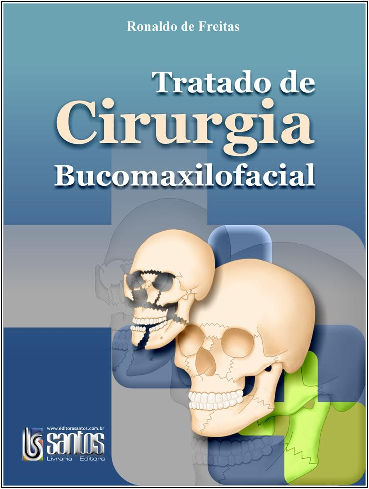

Tratado de Cirurgia Bucomaxilofacial

Sumário
- Avaliação pré-operatória e Exames Complementares do Paciente Cirúrgico
- Emergências Médicas em Odontologia
- Assepsia, Anti-sepsia, Esterilização e Biossegurança
- Princípios de Técnica Cirúrgica: Diérese, Hemostasia, Síntese (instrumentais, tipos de sutura e fios)
- Reparação Tecidual
- Terapêutica Medicamentosa
- Anestésicos e Técnicas de Anestesia Local
- Anestesia Geral em Cirurgia Bucomaxilofacial
- Exodontias
- Cirurgia dos Dentes Inclusos
- Cirurgias com Finalidade Protética
- Implantes Osseointegrados
- Infecções Maxilofaciais
- Tratamento das Sinusopatias
- Biópsia - Citologia
- Cirurgias das Afecções das Glândulas Salivares
- Cirurgia dos Cistos da Região Bucomaxilofacial
- Cirurgia das Neoplasias Benignas da Região Bucomaxilofacial
- Neuralgia do Trigêmeo - Diagnóstico, Diagnóstico Diferencial e Tratamento
- Sistemas de Atenção às urgências e atendimento Inicial ao Politraumatizado
- Traumatismo Dentoalveolar
- Fraturas do Nariz
- Tratamento das Fraturas de Mandíbula
- Fraturas Zigomaticorbitais
- Fraturas dos Terços Médio, Superior e Panfaciais
- Preparo Ortodôntico para Cirurgia Ortognática
- Cirurgia Ortognática
- Cirurgia da Articulação Temporomandibular
- Reconstrução da Região Craniomaxilofacial